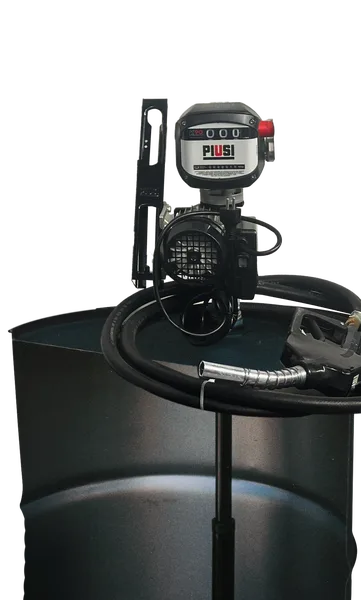

Бочковой раздаточный комплект для ДТ Piusi DRUM BI-PUMP (12/24в, 80л мин)
Артикул: 0919
PIUSI (Италия)
Раздел: Мобильные заправочные модули · АЗС
| Наличие счетчика | Нет |
| Питание насоса | 12/24 |
| Скорость выдачи топлива | 80 |
| Тип жидкости | Дизель |
Цена и наличие — по запросу. Поставляем оригинал и аналоги. Доставка по России.
Описание
Бочковой раздаточный комплект для ДТ Piusi DRUM BI-PUMP (12/24в, 80л мин) производства PIUSI (Италия) — позиция из раздела «Мобильные заправочные модули» для АЗС. Компания SYNDICAT поставляет оборудование и комплектующие для автозаправочных и газозаправочных станций по всей России. Цена и наличие «Бочковой раздаточный комплект для ДТ Piusi DRUM BI-PUMP (12/24в, 80л мин)» — по запросу: оставьте заявку или позвоните, подберём оригинал или аналог и рассчитаем доставку.